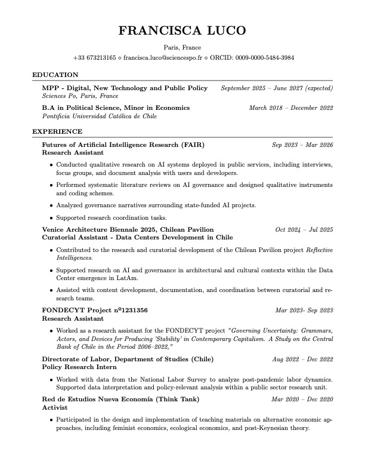

Portfolio
FL
I'm based in Paris.
My practice spans AI, Latin America, and knowledge production.

I have published a couple of papers, and now I'm doing my masters.
I was very interested in economics during my bachelor's.